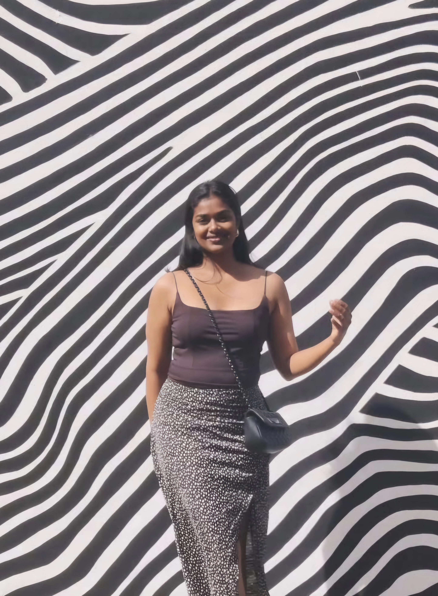
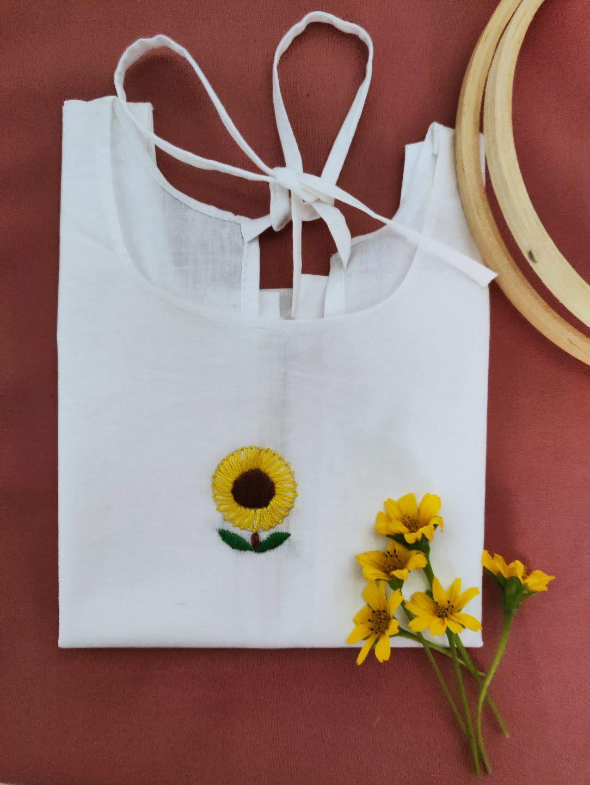
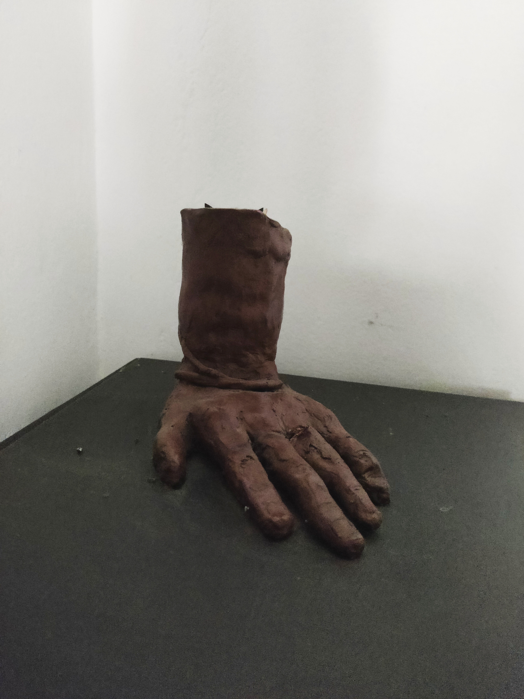
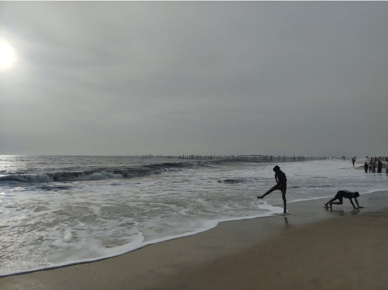

About Me
I am a multipotentialite with a wide range of interests and I have finally discovered a career path that combines a bunch of my interests. I am currently trying to utilise these qualities as effectively as possible in this field to create the best user experience.
In short, I believe in the phrase;
"A jack of all trades is a Master of none but oftentimes better than a master of one".
More About Me
I find immense joy in transforming abstract ideas into visual stories — whether that’s through UI design, sketching, or digital art.
Outside work, I experiment with creative media like clay, embroidery, and stop-motion animation. I thrive when I'm building things with intent and emotion.